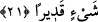

21. Henüz elde edemediğiniz başka ganimetler de vardır ki, onlar Allah’ın bilgi ve
kudreti dahilindedir. Allah, her şeye kadirdir.
Size gücünüz yetmediği halde bu ve daha başka ganimetleri çabuklaştırdı. Bu
ganimetler Huneyn gazvesinde ele geçen, Hevâzin kabilesinin ganimetleridir. Çünkü
onlar Hudeybiye yılına kadar Hevâzin ganimetlerine güç yetirememişlerdi. Ancak
Mekke’nin fethedilmesinin hemen akabinde ancak buna güç yetirdiler. Güçsüzlükle
vasıflandırması, Huneyn savaşı sırasında önce hezimete uğrayıp daha sonra tekrar
savaşa dönmelerindendir.
Bu şekilde önce hezimete uğramaları, onların gayretini toplamalarına ve artırmalarına
sebep olmuştur. Denir ki: “Kavmim bir manevra yaptı, açıldı sonra da kökünü kazıdı.”
Allah diğer fetihleri de kuşatmıştır. Bu ifâde, fetihlerin gerçekleştirilmesinin Allah
için son derece kolay olduğunu, fakat insanlar için de son derece zor olduğunu
anlatmaktadır. Yâni, Allah’ın o beldelere gücü yetti, onlara tahakküm edip onlara karşı
size yardım etti, demektir.
Şöyle söyleyenler de olmuştur: Bu ifâdenin mânâsı, Allah o beldeleri, siz fethedesiniz
diye, diğer milletlerden korudu, onların fethetmesine müsâade etmedi, diyerek
müslümanların fetihlerinin hepsinin Allah’ın koruması ve kudretiyle vücûda geldiğini
bildirmek içindir.
İbn Abbas (r.a.) der ki: “– İstanbul, Roma, Ammuriye, İran, Rum şehirleri ve Şam’ın
fethi bu ifâdenin şümûlüne dahildir.” İstanbul’un şu anda Osmanlı Devleti’nin
hâkimiyeti altında olduğu herkes tarafından biliniyor. Roma şehrine gelince -ki buna
Büyük Roma da denir- Bizans’ın İstanbul gibi büyük şehirlerinden birisidir. Ammuriye
hakkında ise, Mir’ât isimli eserinde İmam Yâfiî der ki; Bu şehir, Rumların Ankara diye
isimlendirdikleri büyük bir şehirdi. Kralları bu şehirde bulunur. Bu şehri
Mu’tasimbillah fethetmiştir.
Râğıb Isfahânî der ki: “İhâta etmek, kuşatmak” iki anlama gelir. Birincisi, cisim olan
bir şeyi maddî bir şekilde kuşatmaktır. Meselâ “Falanca yeri kuşattım” denir. Aynı
şekilde “korumak” anlamında kullanılır. Allah her şeyi ihâta etmiştir. Her yönüyle
korumuştur. “Yabancıların tasallutunu engellemek” anlamında da kullanılır. “Ne var ki
Allah sizi ihâta etmiştir/korumuştur” gibi.
İkincisi ise, “ilim olarak bütün inceliklerine vâkıf olmak” anlamında kullanılır.
Meselâ, âyet-i kerîme’de “İlim yönüyle herşeyi ihâta etmiştir” ifâdesi mevcuddur. Bir
şeyi ilmî olarak ihâta etmek, “o şeyin varlığını, cinsini, miktarını, nasıl olduğunu,
boyutlarını, varlık sahnesine getiriliş seyrini, onunla ve ondan meydana gelen şeyleri
bilmek” demektir. Bu ise ancak Allah (c.c.) için mümkün olabilen bir durumdur.
Nitekim âyet-i kerîme’de “Hayır, onlar ilmini ihâta edemedikleri şeyi inkar ettiler”
(Yunus, 10/39) denilerek insanların ilmî olarak bir şeyi ihâta edemeyeceklerine işâret
edilmiştir.